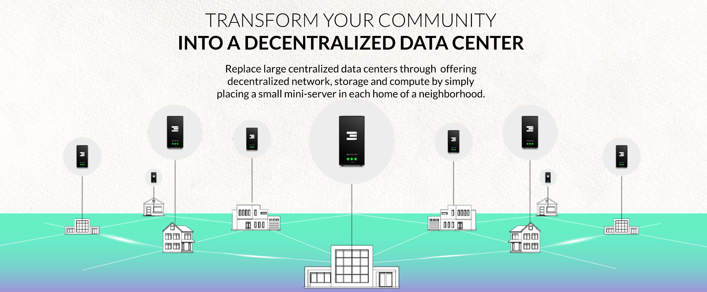
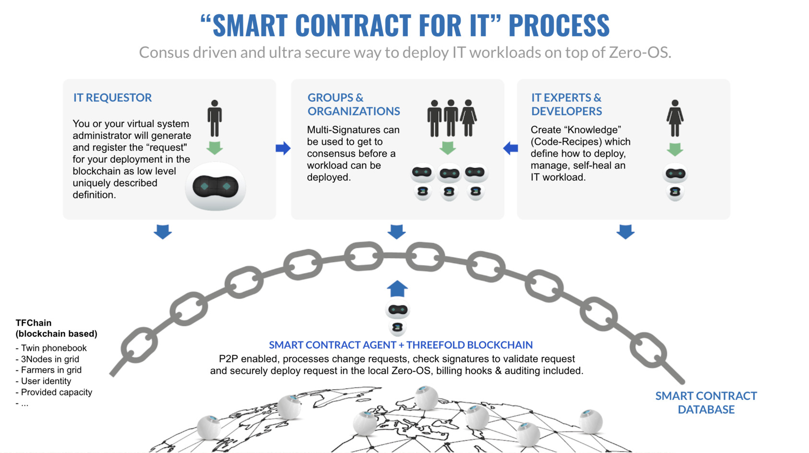
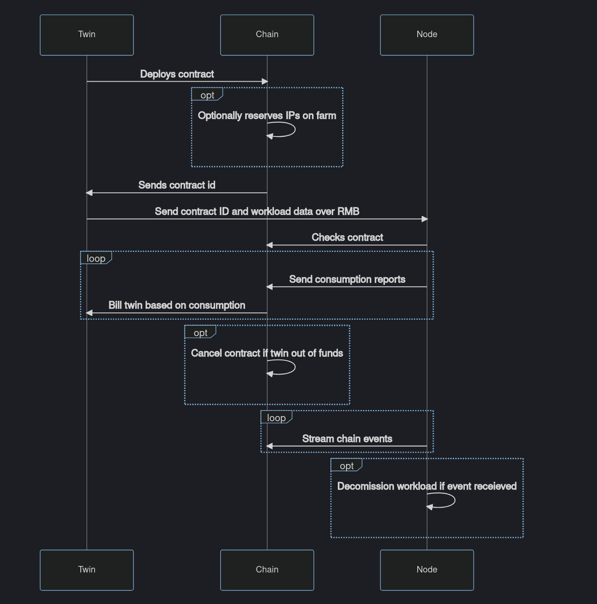
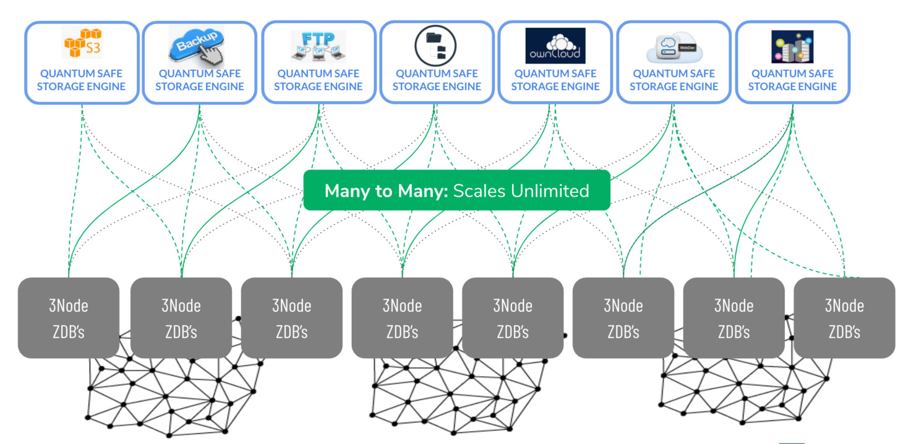
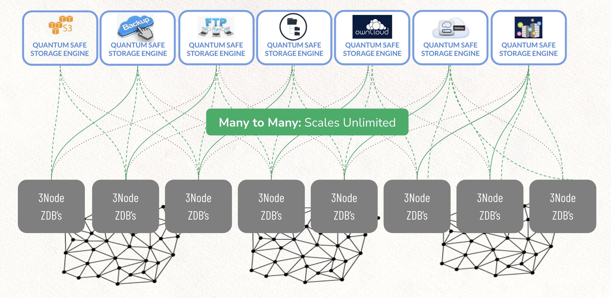
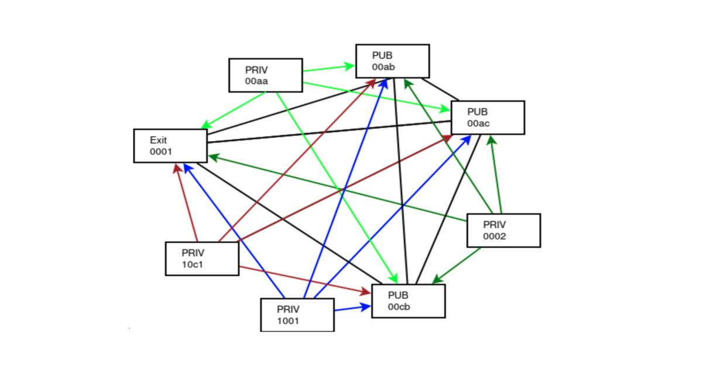
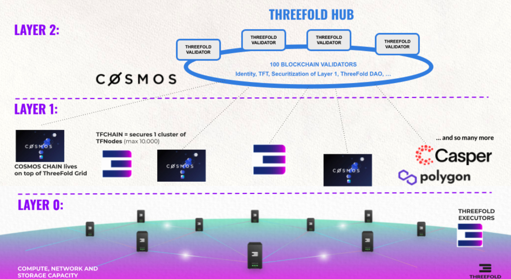

Grant
- Received Grant Before: No
- Grant amount total; 500k
- Grant Id: 36
- Completion: 60%
- User Id: 168 (maybe this should be relocated)
- Company or Organization: ThreeFold
Short Description
Data is the new gold. Data is generated everywhere but data storage is still very centralized. Most data lakes exist in one of the main cloud providers and while these data lakes grow in size they become increasingly more difficult to move around. In order for decentralisation to prosper data generated and used by DOA projects cannot end up being stored in one of these large cloud providers.
Integration between a layer 1 blockchain project and a decentralised data processing and storage technology will set the blockchain free of running in and storing data on these large cloud providers....
Milestone 1 (100% done) = 100k USD
- Milestone title:
- Create the ability to run layer-1 blockchain nodes on the ThreeFold Technology grid.
- Due date: done
- Details of what will be delivered:
- The 1-click blockchain (Casper Labs and / or otherS) node deployment solution - powered by ThreeFold's P2P cloud, using Kubernetes and/or Docker. The ThreeFold grid has been up and running since 2018 and has a large quantity of compute and storage resources. The TF Grid is owned by independent farmers that believe in decentralized capacity generation everywhere. Over the last year, a number of blockchain projects have been looking for easy deployment options to allow their communities to have an alternative to "run a node on centralised clouds" to do it all yourself. We can offer a super exciting way here on top of our TFGrid.
- Acceptance Criteria:
- All agreed layer 1 blockchain technologies have a "single click" deployment mechanism. All the current members of the ETA are considered to be candidates for grid deployments.
remarks: we were an early grant and were trying to get feedback before submitting because there was no clarity for us how to do it and how sure we would be on the grant. We might have been not good enough in our communication, but the grant got removed before we could receive funding for the work done. We hope that this might be recovered, as such we have updated this document to reflect our current situation and work done.
Acceptance Criteria:
- provisioning solution can deploy blockchain nodes and this can be done by everyone
- see how the provisioning method (1-click) cuts heavily on complexity
- deploy a casper blockchain node in less than 5mins which would have taken hours before (software deployment)
- all required code to allow everyone to experiment (see weblets repository here)
- all code is opensource (threefold as well as the deployers for provisioning)
- do detailed research about casperlabs to see how integration can be done (and if): our conclusion it can be done (and is done)
- link to required technology parts as provided by ThreeFold, see if we can use those solutions and what benefit would be
- do all required work to let it work on ThreeFold Grid
Milestone 2a = 200k USD
Extend the TFGrid with capacity for all current layer-1 protocols involved in ETA, specifically for CasperLabs
- Milestone title: Extend the TFGrid with capacity for all current layer-1 protocols involved in ETA (part a)
- The portion that the OP is requesting from the total grant for the milestone:
- USD 200.000 for part a
- Due date:
- Done
- Details of what will be delivered:
- Extension of the TF Grid to have capacity for data processing and storage capabilities. Tested and verified hardware platforms are the Scaleout compute, Scaleout storage, and Titan V2. An architecture of how to combine these platforms into a scalable, secure, autonomous, distributed and decentralized platform needs to be created and this will also indicate the distribution and deployment plan. So the deliverable in this milestone is capacity in locations well connected and well powered, available to DevxDAO's done the DAO way.
- Acceptance Criteria: Operational plaform and layer-1 protocols deployed on the 3nodes.
Acceptance Criteria:
We have been able to leverage a lot of technology from Threefold Tech which has been developed over the last 10 years. This grant was all about making sure and improving this codebase so it can be used for CasperLabs. This is the result of hundreds of man-months for which we are delighted to receive recognition in a form of a grant.
- support for casperlabs
- support for pre-search
-
support for pokt.network (was a super big one and allows the next ones)
- ethereum
- harmony
- solana
- avalanche
- binance smartchain
- gnosis chain
- fuse blockchain
- polygon
- weblets = the provisioning widgets
- intelligent capacity planning
- graphql layer to allow capacity planning (blockchain to graphql for all assets on blockchain)
- availability of farming layer = 3node deployment (today tens of nodes per day are added by community as proof)
- documentation how to deploy nodes (hardware) and connect to Threefold network
- documentation and make demonstration tutorials in text and video
Milestone 2b = 200k USD
The work as specified here is additional in relation to the original grant.
- The portion that the OP is requesting from the total grant for the milestone:
- USD 200.000 for part B
- Due date:
- Nov 2022
- Details of what will be delivered:
- Additional work which was not part of original but is good to do in line to where the market is today
- Also work to make above more userfriendly and tangible by community to understand e.g. training material
Change to this original milestone is that we will do a train the trainer program with CasperLabs or partners companies to make them self sufficient in taking the 1-click solution forward by themselves and even how to make changes in the deployment code and the widgets.
Acceptance Criteria:
For this part of the grant we need much more input from Casperlabs.
- deploy private blockchain for casperlabs on X nr of nodes with consensus driven deployment (this resolves the blockchain dilemma problem)
- based on CasperLabs input create additional weblets of how to deploy any part of the casperlabs solution
- based on CasperLabs input create deployment scripts in vlang to make it super easy for community to deploy anything and make changes in the way how it gets deployed for their requirements
- based on CasperLabs input to where and for what partners private capacity is required, all required capacity has been deployed and is operational
- make a dedicated portal for casperlabs to bring all required knowledge, manuals and weblets together to allow the full community to experiment and deploy
- add dedicated nodes support (private nodes)
- add deployment mechanism where blockchains can be deployed in 100% private mode, the deployers have no access to the data
- CasperLabs and Partner / Customer base has proven to be able to use the capacity and deploy blockchain nodes where required.
- Train the trainer program done
- better description of / manuals for the solution
- documentation and make demonstration tutorials in text and video
- document all links to code & scripts as used on above
Solution
To step away from the centralized ownership of servers and networks that make up the internet a different model is needed. This model needs to incentivize independent server owners to make their servers part of a collective grid that make up a new internet. An infrastructure layer producing compute and storage capabilities. Similar to how solar panels create electricity and can form an electricity grid serving a community.
This server owners can house their servers anywhere where there is reliable power and electricity in a house, school, office or government building.

Threefold Can Help
ThreeFold is creating technology that creates a decentralized grid with compute and storage capabilities to build a new internet that is not in the hands of a few monopolies but in the hands of many. This stack is centered around a solid "layer-0" which works in a very different way than traditional clouds.
We will identify that this technology is well positioned to create a decentralized platform with smart contract deployment methods that can automate 99% of the work needed for blockchain node deployments.
This overcomes the 2 problems identified with the current solutions:
- this ThreeFold grid, an internet of internets, is owned by many individuals, companies and governments and presents a true decentralized platform to run blockchain nodes.
- the knowledge required to do such a deployment does not surpass knowledge needed to maintain a digital currency wallet. And even that can be avoided.
This technology based will be used to create a distributed and decentralized cloud platform where blockchain nodes can run from home, school, office and datacenter locations. A true step forward in make blockchains resilient.
Solution components
Capacity creation: Farming
To decentralize ownership of this new internet layer we have to create incentives for people, companies and government bodies to invest in hardware, provide electricity and hardware and start creating compute and storage capacity. This is called farming. A faming model is developed in which farmers (hardware owners) get a reward for providing this capacity. The farming model is described in great detail here
Farmers create compute and storage units to the size of their hardware units which can be used by application and service providers. An overview of the current size and state of the grid build by farmers please have a look and the grid explorer.
Capacity consumption: Cultivation
All these compute (CU), storage (SU) and network (NU) units create a decentralized cloud. This cloud can be used to build real world experiences similar (or better than) on the existing centralized clouds. It enables all current digital innovators to have a decentralized alternative to large central clouds.

How to use this cloud
Under the hood a unique provisioning methodology is developed to allow for decentralized hardware to be safe, private and almost unhackable by using a smart contracting mechanism to bring capacity users and capacity creators together without a third party in the middle.
On the outside this cloud has a number of control mechanisms that are well known in the IT industry and create compatible interfaces for existing workloads. Examples are:
- Typescript
- Terraform scripting
- Docker devops
- Kubernetes clusters
- S3 storage interface
For all digital innovators this grid allows for normal mainstream deployment methods ande devops trains.

For the ones that want to adopt new ways to deploy applications and services there is a language being developed that will have low level primitives built in to create smart contracts to deploy services.
1-click deployment
The solution is to make blockchain nodes super simple on this grid. In the architecture section we will explain how smartcontracts can be compiled that deploy blockchain and other workloads without the intervention of system administrators or command and control framework . The smartcontract contains all the elements, knowledge and information on how to deploy any workload, in this case we focus on deploying a blockchain node.

The goal here is to make deploying a blockchain node on this decentralized grid:
- simple
- safe
- anyware
- reliable
- affordable
With that in mind the required amount of information and interface should be very simple. Information required should not be more than:
- instance name
- instance size
- instance location
With those three parameters a deployment is fully defined and should be able to execute.

Smart Contract on TFGrid 3.0
Ability for developers to launch IT workloads on the TFGrid using our TFGrid primitives.

As from TFGrid 3.0, the 'Smart Contract for IT' concept for reserving capacity is fully decentralized and runs on TF-Chain.
Architecture
The TFChain Blockchain will keep a record of all Entities, Twins, Nodes and Farmers in the TF-Grid network. This makes it easy to integrate the Smart Contract on TFChain as well since we can read from that storage in runtime.

The Smart Contract on TFChain works as following:
1: To deploy the user creates a smart contract for IT
The user creates a contract using an SDK, user interface (browser) or the digital twin.
contract = {
version: contractVersion,
contract_id: contractID,
twin_id: NumericTwinID for the contract,
// node_address is the node address.
node_id: NumericNodeID
// data is the encrypted deployment body. This encrypted the deployment with the **USER** public key. So only the user can read this data later on (or any other key that he keeps safe).
// this data part is read only by the user and can actually hold any information to help him reconstruct his deployment or can be left empty.
data: encrypted(deployment) // optional
// hash: is the deployment predictable hash. the node must use the same method to calculate the challenge (bytes) to compute this same hash.
//used for validating the deployment from node side.
deployment_hash: hash(deployment),
// public_ips: number of ips that need to be reserved by the contract and used by the deployment
public_ips: 0,
state: ContractState (created, deployed),
public_ips_list: list of public ips on this contract
}
- The
node_idfield is the target node's ID. A user can do lookup for a node to find its corresponding ID. - The workload data is encrypted by the user and contains the workload definition for the node.
If public_ips is specified, the contract will reserve the number of public ips requested on the node's corresponding farm. If there are not enough ips available an error will be returned. If the contract is canceled by either the user or the node, the IPs for that contract will be freed.
This contract is registered on the blockchain.
2: The user sends the contractID and workload through the RMB to the destination Node.
RMB is our Reliable Message Bus, workload definitions don't get registerd on the TFChain but directly send peer2peer, this is more secure and private, the smart contract still controls the overall process.
The Node reads from the RMB and sees a deploy command, it reads the contractID and workload definition from the payload. It decodes the workload and reads the contract from chain using the contract ID, the Node will check if the user that created the contract and the deployment hash on the contract is the same as what the Node receives over RMB. If all things check out, the Node deploys the workload.
3: The Node sends consumption reports to the chain
The Node periodically sends consumption reports back to the chain for each deployed contract. The chain will compute how much is being used and will charte the user in TFT.
A report looks like:
json
{
"contract_id": contractID,
"timestamp": "timestampOfReport",
"cru": cpus,
"sru": ssdInBytes,
"hru": hddInBytes,
"mru": memInBytes,
"nru": trafficInBytes
}
Usage of SU, CU and NU will be computed based on the prices and the rules that Threefold set out for cloud pricing.
Users need to pay using TFT.
Footnote
Sending the workloads encrypted to the chain makes sure that nobody except the user can read his deployment data. It also facilitates a way for the user to recreate his workload data from the chain.
4: mutliple users can sign the smart contract for IT
It's possible to sign workloads with multiple users to deploy a workload in all security.
Users can use multisignature for this (from v3.9.0).
Solution
To step away from the centralized ownership of servers and networks that make up the internet a different model is needed. This model needs to incentivize independent server owners to make their servers part of a collective grid that make up a new internet. An infrastructure layer producing compute and storage capabilities. Similar to how solar panels create electricity and can form an electricity grid serving a community.
This server owners can house their servers anywhere where there is reliable power and electricity in a house, school, office or government building.
Threefold Can Help
ThreeFold is creating technology that creates a decentralized grid with compute and storage capabilities to build a new internet that is not in the hands of a few monopolies but in the hands of many. This stack is centered around a solid "layer-0" which works in a very different way than traditional clouds.
We will identify that this technology is well positioned to create a decentralized platform with smart contract deployment methods that can automate 99% of the work needed for blockchain node deployments.
This overcomes the 2 problems identified with the current solutions:
- this ThreeFold grid, an internet of internets, is owned by many individuals, companies and governments and presents a true decentralized platform to run blockchain nodes.
- the knowledge required to do such a deployment does not surpass knowledge needed to maintain a digital currency wallet. And even that can be avoided.
This technology based will be used to create a distributed and decentralized cloud platform where blockchain nodes can run from home, school, office and datacenter locations. A true step forward in make blockchains resilient.
Solution components
Capacity creation: Farming
To decentralize ownership of this new internet layer we have to create incentives for people, companies and government bodies to invest in hardware, provide electricity and hardware and start creating compute and storage capacity. This is called farming. A faming model is developed in which farmers (hardware owners) get a reward for providing this capacity. The farming model is described in great detail here
Farmers create compute and storage units to the size of their hardware units which can be used by application and service providers. An overview of the current size and state of the grid build by farmers please have a look and the grid explorer.
Capacity consumption: Cultivation
All these compute (CU), storage (SU) and network (NU) units create a decentralized cloud. This cloud can be used to build real world experiences similar (or better than) on the existing centralized clouds. It enables all current digital innovators to have a decentralized alternative to large central clouds.
How to use this cloud
Under the hood a unique provisioning methodology is developed to allow for decentralized hardware to be safe, private and almost unhackable by using a smart contracting mechanism to bring capacity users and capacity creators together without a third party in the middle.
On the outside this cloud has a number of control mechanisms that are well known in the IT industry and create compatible interfaces for existing workloads. Examples are:
- Typescript
- Terraform scripting
- Docker devops
- Kubernetes clusters
- S3 storage interface
For all digital innovators this grid allows for normal mainstream deployment methods ande devops trains.
For the ones that want to adopt new ways to deploy applications and services there is a language being developed that will have low level primitives built in to create smart contracts to deploy services.
1-click deployment
The solution is to make blockchain nodes super simple on this grid. In the architecture section we will explain how smartcontracts can be compiled that deploy blockchain and other workloads without the intervention of system administrators or command and control framework . The smartcontract contains all the elements, knowledge and information on how to deploy any workload, in this case we focus on deploying a blockchain node.
The goal here is to make deploying a blockchain node on this decentralized grid:
- simple
- safe
- anyware
- reliable
- affordable
With that in mind the required amount of information and interface should be very simple. Information required should not be more than:
- instance name
- instance size
- instance location
With those three parameters a deployment is fully defined and should be able to execute.
Casper labs deployment

Smart contract for IT....
TODO complete
Profile Manager
Currently, we're supporting four different networks.
- One for development purposes (Devnet) where you can find it at https://play.dev.grid.tf
- One for internal testing and verifications (QAnet) where you can find it at https://play.qa.grid.tf
- One for testing (Testnet) where you can find it at https://play.test.grid.tf
- One for our mainnet and you can find it at https://play.grid.tf

Start by creating a profile from the upper right button. This creates a profile, saved and encrypted locally in your browser.
Secure

The Profile Manager Password is how you store your profile info in browser local storage. Create a new profile by visiting the Create Profile Manager tab and enter your new password. After you're done, click on Create New Profile Manager.
You'll need that password to be able to load your profiles afterwards from the Activate Profile Manager tab.

Process
Start entering the following information required to create your new profile.
Profile Name: Any chosen name, makes it easy for you to remember between sessions.Mnemonicsare the secret words of your Polkadot account, Generate yours here!.- Your
Public SSH Keyis used to login into VM's, Kubernetes, ...
After you finish typing your credentials, click on Activate. Once your profile gets activated, you should find your Twin ID and Address generated under your Mnemonics for verification. Also, your Account Balance will be available at the top right corner under your profile name.
CasperLabs
Casper Networkis a blockchain protocol built from the ground up to remain true to core Web3 principles and adapt to the needs of our evolving world.
!!!include:weblets_play_go
- Make sure you have an activated profile
- Click on the Casperlabs tab
Process :

-
Enter an Application Name. It's used in generating a unique subdomain on one of the gateways on the network alongside your twin ID. Ex. cl98casp.gent02.dev.grid.tf
-
Select a capacity package:
- Minimum: {cpu: 1, memory: 1024 * 4, diskSize: 100 }
- Standard: {cpu: 2, memory: 1024 * 16, diskSize: 500 }
- Recommended: {cpu: 4, memory: 1024 * 32, diskSize: 1000 }
- Or choose a Custom plan
-
Choose a gateway node to deploy your CasperLabs instance on.
-
Choose a node to deploy your Casperlabs instance on.
-
Either use the Capacity Filter. Which simply lets you pick a Farm and Country, after clicking on Apply filters and suggest nodes then it lists available nodes with these preferences and you pick.
-
Or use Manual and type a specific node number to deploy on.
-
After that is done you can see a list of all of your deployed instances
Click on Visit to go to the homepage of your Casperlabs instance! The node takes a long time in order for the RPC service to be ready so be patient!

Unlock Profile Manager
To unlock a previously created profile manager, do the following steps:
- Go to the Activate Profile Manager tab.
- Fill in the Profile Manager Password used when you created the profile
- Click
Load Profiles
Technology
ThreeFold has developed a highly efficient infrastructure layer for a new internet.
ThreeFold tech stack has 4 main layers
- compute - a flexible way to deploy any workload on edge cloud computers
- storage - a quantum safe storage system
- network - a planetary scalable overlay network
- blockchain for Smart Contract For IT

A lot of capacity has been deployed in the world, ThreeFold farmers buy a computer and they connect it to the internet, as such they use our Operating system to provide Internet capacity to the world.

There are multiple ways how people can interactive without our platform (as developer or IT expert = sysadmin):

All technology is developed by ThreeFold and is opensource, this technology is being used for the ThreeFold grid see https://www.threefold.io which is a deployment of a new internet which is green, safe and owned by all of us.
This document explains how we are a missing layer for the full web2, web3 and blockchain world.
This leads to a system which is highly scalable.

Capacity Layer

Zero-OS
ThreeFold has build its own operating system called, Zero-OS which was based starting from a Linux Kernel with as purpose to remove all the unnecessary complexity found on contemporary OS's.
Zero-OS supports a small number of primitives, and performs low-level functions natively.
It delivers 3 primitive functions:
- storage capacity
- compute capacity
- network capacity
There is no shell, local nor remote attached to Zero-OS. It does not allow for inbound network connections to happen to the core. Also, given its shell-less nature, the people and organizations, called farmers, that run 3nodes cannot issue any commands nor access its features. In that sense, Zero-OS enables a "zero people" (autonomous) Internet, meaning hackers cannot get in, while also eliminating human error from the paradigm.
3Node
The ThreeFold_Grid needs hardware/servers to function. Servers of all shapes and sizes can be added to the grid by anyone, anywhere in the world. The production of Internet Capacity on the Threefold Grid is called Farming and people who add these servers to the grid are called Farmers. This is a fully decentralized process and they get rewarded by the means of TFT.
Farmers download the Zero-OS operating system and boot their servers themselves. Once booted, these servers become 3Nodes. The 3Nodes will register themselves in a database called the TF_Explorer. Once registered in the TF_Explorer, the capacity of the 3Nodes will become available on the TF Grid Explorer. Also, given the autonomous nature of the ThreeFold_Grid, there is no need for any intermediaries between the user and 3Nodes.
This enables a complete peer-to-peer environment for people to reserve their Internet Capacity directly from the hardware.
Smart Contract for IT
The purpose of the smart contract for IT is to create and enable autonomous IT. Autonomous self-driving IT is possible.
Once a smart contract for IT is created, it will be registered in the TFChain Blockchain.
Learn more about smart contract for IT here.
TFChain
A blockchain running on the TFGrid stores following information (TFGrid 3.0)
- registry for all digital twins (identity system, aka phonebook)
- registry for all farmers & 3nodes
- registry for our reputation system
- info as required for the Smart Contract for IT
This is the hart of our operational system of the TFGrid
Peer-to-Peer Network
The peer-to-peer network allows any zmachine or user to connect with other zmachine or users on the TF Grid securely and creates a private shortest path peer-to-peer network.
Web Gateway
The Web Gateway is a mechanism to connect the private (overlay) networks to the open Internet. By not providing an open and direct path in to the private network, a lot of malicious phishing and hacking attempts are stopped at the Web Gateway level for container applications.
i
Quantum Safe Storage System
Imagine a storage system with the following benefits
This is not a dream but does exist and is the underpinning of the TFGrid.
Our storage architecture follows the true peer-to-peer design of the TF grid. Any participating node only stores small incomplete parts of objects (files, photos, movies, databases...) by offering a slice of the present (local) storage devices. Managing the storage and retrieval of all of these distributed fragments is done by a software that creates development or end-user interfaces for this storage algorithm. We call this 'dispersed storage'.

Peer2peer provides the unique proposition of selecting storage providers that match your application and service of business criteria. For example, you might be looking to store data for your application in a certain geographic area (for governance and compliance) reasons. Also, you might want to use different "storage policies" for different types of data. Examples are live versus archived data. All of these uses cases are possible with this storage architecture and could be built by using the same building blocks produced by farmers and consumed by developers or end-users.
i
Quantum Safe Storage System
Imagine a storage system with the following benefits
This is not a dream but does exist and is the underpinning of the TFGrid.
Our storage architecture follows the true peer-to-peer design of the TF grid. Any participating node only stores small incomplete parts of objects (files, photos, movies, databases...) by offering a slice of the present (local) storage devices. Managing the storage and retrieval of all of these distributed fragments is done by a software that creates development or end-user interfaces for this storage algorithm. We call this 'dispersed storage'.
Peer2peer provides the unique proposition of selecting storage providers that match your application and service of business criteria. For example, you might be looking to store data for your application in a certain geographic area (for governance and compliance) reasons. Also, you might want to use different "storage policies" for different types of data. Examples are live versus archived data. All of these uses cases are possible with this storage architecture and could be built by using the same building blocks produced by farmers and consumed by developers or end-users.
i
Quantum Safe Filesystem
A redundant filesystem, can store PB's (millions of gigabytes) of information.
Unique features:
- Unlimited scalable (many petabytes) filesystem
- Quantum Safe:
- On the TFGrid, no farmer knows what the data is about
- Even a quantum computer cannot decrypt
- Data can't be lost
- Protection for datarot, data will autorepair
- Data is kept for ever (data does not get deleted)
- Data is dispersed over multiple sites
- Sites can go down, data not lost
- Up to 10x more efficient than storing on classic storage cloud systems
- Can be mounted as filesystem on any OS or any deployment system (OSX, Linux, Windows, Docker, Kubernetes, TFGrid, ...)
- Compatible with +- all data workloads (not high performance data driven workloads like a database)
- Self-healing: when a node or disk lost, storage system can get back to original redundancy level
- Helps with compliance to regulations like GDPR (as the hosting facility has no view on what is stored, information is encrypted and incomplete)
- Hybrid: can be installed onsite, public, private, ...
- Read-write caching on encoding node (the front end)

Mount Any Files in your Storage Infrastructure
The QSFS is a mechanism to mount any file system (in any format) on the grid, in a quantum-secure way.
This storage layer relies on relies on 3 primitives of the ThreeFold technology :
-
0-db is the storage engine. It is an always append database, which stores objects in an immutable format. It allows keeping the history out-of-the-box, good performance on disk, low overhead, easy data structure and easy backup (linear copy and immutable files).
-
0-stor-v2 is used to disperse the data into chunks by performing 'forward-looking error-correcting code' (FLECC) on it and send the fragments to safe locations. It takes files in any format as input, encrypts this file with AES based on a user-defined key, then FLECC-encodes the file and spreads out the result to multiple 0-DBs. The number of generated chunks is configurable to make it more or less robust against data loss through unavailable fragments. Even if some 0-DBs are unreachable, you can still retrieve the original data, and missing 0-DBs can even be rebuilt to have full consistency. It's an essential element of the operational backup.
-
0-db-fs is the filesystem driver which uses 0-DB as a primary storage engine. It manages the storage of directories and metadata in a dedicated namespace and file payloads in another dedicated namespace.
Together they form a storage layer that is quantum secure: even the most powerful computer can't hack the system because no single node contains all of the information needed to reconstruct the data.

This concept scales forever, and you can bring any file system on top of it:
- S3 storage
- any backup system
- an ftp-server
- IPFS and Hypercore distributed file sharing protocols
- ...

Architecture
By using our filesystem inside a Virtual Machine or Kubernetes the TFGrid user can deploy any storage application on top e.g. Minio for S3 storage, OwnCloud as online fileserver.

Any storage workload can be deployed on top of the zstor.
graph TD subgraph Data Ingress and Egress qss[Quantum Safe Storage Engine] end subgraph Physical Data storage st1[Virtual Storage Device 1] st2[Virtual Storage Device 2] st3[Virtual Storage Device 3] st4[Virtual Storage Device 4] st5[Virtual Storage Device 5] st6[...] qss -.-> st1 & st2 & st3 & st4 & st5 & st6 end
Quantum Safe Storage Algoritm

The Quantum Safe Storage Algorithm is the heart of the Storage engine. The storage engine takes the original data objects and creates data part descriptions that it stores over many virtual storage devices (ZDB/s)
Data gets stored over multiple ZDB's in such a way that data can never be lost.
Unique features
- data always append, can never be lost
- even a quantum computer cannot decrypt the data
- is spread over multiple sites, sites can be lost, data will still be available
- protects for datarot.
Why
Today we produce more data than ever before. We could not continue to make full copies of data to make sure it is stored reliably. This will simply not scale. We need to move from securing the whole dataset to securing all the objects that make up a dataset.
ThreeFold is using space technology to store data (fragments) over multiple devices (physical storage devices in 3Nodes). The solution does not distribute and store parts of an object (file, photo, movie...) but describes the part of an object. This could be visualized by thinking of it as equations.
Details
Let a,b,c,d.... be the parts of that original object. You could create endless unique equations using these parts. A simple example: let's assume we have 3 parts of original objects that have the following values:
a=1
b=2
c=3
(and for reference that part of real-world objects is not a simple number like 1 but a unique digital number describing the part, like the binary code for it 110101011101011101010111101110111100001010101111011.....). With these numbers we could create endless amounts of equations:
1: a+b+c=6
2: c-b-a=0
3: b-c+a=0
4: 2b+a-c=2
5: 5c-b-a=12
......
Mathematically we only need 3 to describe the content (=value) of the fragments. But creating more adds reliability. Now store those equations distributed (one equation per physical storage device) and forget the original object. So we no longer have access to the values of a, b, c and see and we just remember the locations of all the equations created with the original data fragments. Mathematically we need three equations (any 3 of the total) to recover the original values for a, b or c. So do a request to retrieve 3 of the many equations and the first 3 to arrive are good enough to recalculate the original values. Three randomly retrieved equations are:
5c-b-a=12
b-c+a=0
2b+a-c=2
And this is a mathematical system we could solve:
- First:
b-c+a=0 -> b=c-a - Second:
2b+a-c=2 -> c=2b+a-2 -> c=2(c-a)+a-2 -> c=2c-2a+a-2 -> c=a+2 - Third:
5c-b-a=12 -> 5(a+2)-(c-a)-a=12 -> 5a+10-(a+2)+a-a=12 -> 5a-a-2=2 -> 4a=4 -> a=1
Now that we know a=1 we could solve the rest c=a+2=3 and b=c-a=2. And we have from 3 random equations regenerated the original fragments and could now recreate the original object.
The redundancy and reliability in such system comes in the form of creating (more than needed) equations and storing them. As shown these equations in any random order could recreate the original fragments and therefore redundancy comes in at a much lower overhead.
Example of 16/4

Each object is fragmented into 16 parts. So we have 16 original fragments for which we need 16 equations to mathematically describe them. Now let's make 20 equations and store them dispersedly on 20 devices. To recreate the original object we only need 16 equations, the first 16 that we find and collect which allows us to recover the fragment and in the end the original object. We could lose any 4 of those original 20 equations.
The likelihood of losing 4 independent, dispersed storage devices at the same time is very low. Since we have continuous monitoring of all of the stored equations, we could create additional equations immediately when one of them is missing, making it an auto-regeneration of lost data and a self-repairing storage system. The overhead in this example is 4 out of 20 which is a mere 20% instead of (up to) 400%.
Content distribution Policy (10/50)
This system can be used as backend for content delivery networks.
Imagine a movie being stored on 60 locations from which we can loose 50 at the same time.
If someone now wants to download the data the first 10 locations who answer fastest will provide enough of the data parts to allow the data to be rebuild.
The overhead here is much more compared to previous example but stil order of magnitude lower compared to other cdn systems.
Datarot
Datarot cannot happen on this storage system
Fact that data storage degrades over time and becomes unreadable, on e.g. a harddisk. The storage system provided by ThreeFold intercepts this silent data corruption, making that it can pass by unnotified.
see also https://en.wikipedia.org/wiki/Data_degradation
Zero Knowledge Proof
The quantum save storage system is zero knowledge proof compliant. The storage system is made up / split into 2 components: The actual storage devices use to store the data (ZDB's) and the Quantum Safe Storage engine.

The zero proof knowledge compliancy comes from the fact the all the physical storage nodes (3nodes) can proof that they store a valid part of what data the quantum safe storage engine (QSSE) has stored on multiple independent devices. The QSSE can validate that all the QSSE storage devices have a valid part of the original information. The storage devices however have no idea what the original stored data is as they only have a part (description) of the origina data and have no access to the original data part or the complete origal data objects.
Network Primitives
- Planetary network:
- is a planetary scalable network, we have clients for windows, osx, android and iphone.
- ZOS Net:
- is a fast end2end encrypted network technology, keep your traffic between your z_machines 100% private.
- ZOS NIC:
- connection to a public ipaddress
- WEB GW:
- web gateway, a secure way to allow internet traffic reach your secure Z-Machine.
Planetary Network

The planetary network is an overlay network which lives on top of the existing internet or other peer2peer networks created. In this network, everyone is connected to everyone. End-to-end encryption between users of an app and the app running behind the network wall.
Each user end network point is strongly authenticated and uniquely identified, independent of the network carrier used. There is no need for a centralized firewall or VPN solutions, as there is a circle based networking security in place.
Benefits :
- It finds shortest possible paths between peers
- There's full security through end-to-end encrypted messaging
- It allows for peer2peer links like meshed wireless
- It can survive broken internet links and re-route when needed
- It resolves the shortage of IPV4 addresses
Whereas current computer networks depend heavily on very centralized design and configuration, this networking concept breaks this mould by making use of a global spanning tree to form a scalable IPv6 encrypted mesh network. This is a peer2peer implementation of a networking protocol.
The following table illustrates high-level differences between traditional networks like the internet, and the planetary threefold network:
| Characteristic | Traditional | Planetary Network |
|---|---|---|
| End-to-end encryption for all traffic across the network | No | Yes |
| Decentralized routing information shared using a DHT | No | Yes |
| Cryptographically-bound IPv6 addresses | No | Yes |
| Node is aware of its relative location to other nodes | No | Yes |
| IPv6 address remains with the device even if moved | No | Yes |
| Topology extends gracefully across different mediums, i.e. mesh | No | Yes |
What are the problems solved here?
The internet as we know it today doesnât conform to a well-defined topology. This has largely happened over time - as the internet has grown, more and more networks have been âbolted togetherâ. The lack of defined topology gives us some unavoidable problems:
- The routing tables that hold a âmapâ of the internet are huge and inefficient
- There isnât really any way for a computer to know where it is located on the internet relative to anything else
- Itâs difficult to examine where a packet will go on its journey from source to destination without actually sending it
- Itâs very difficult to install reliable networks into locations that change often or are non-static, i.e. wireless mesh networks
These problems have been partially mitigated (but not really solved) through centralization - rather than your computers at home holding a copy of the global routing table, your ISP does it for you. Your computers and network devices are configured just to âsend it upstreamâ and to let your ISP decide where it goes from there, but this does leave you entirely at the mercy of your ISP who can redirect your traffic anywhere they like and to inspect, manipulate or intercept it.
In addition, wireless meshing requires you to know a lot about the network around you, which would not typically be the case when you have outsourced this knowledge to your ISP. Many existing wireless mesh routing schemes are not scalable or efficient, and do not bridge well with existing networks.

The planetary network is a continuation & implementation of the [Planetary Network](https://Planetary Network-network.github.io/about.html) network initiative. This technology is in beta but has been proven to work already quite well.
WebGW
The Web Gateway is a mechanism to connect the private networks to the open Internet, in such a way that there is no direct connection between internet and the secure workloads running in the ZMachines.

- Separation between where compute workloads are and where services are exposed.
- Redundant
- Each app can be exposed on multiple webgateways at once.
- Support for many interfaces...
- Helps resolve shortage of IPv4 addresses
Implementation
Some 3nodes supports gateway functionality (configured by the farmers). A 3node with gateway config can then accept gateway workloads and then forward traffic to ZMachines that only has Planetary Network (planetary network) or Ipv6 addresses.
The gateway workloads consists of a name (prefix) that need to be reserved on the block chain first. Then the list of backend IPs. There are other flags that can be set to control automatic TLS (please check terraform documentations for the exact details of a reservation)
Once the 3node receives this workloads, the network configure proxy for this name and the Planetary Network IPs.
Security
ZMachines has to have an Planetary Network IP or any other IPv6 (also IPv4 are accepted) but it means that any person who is connected to the Planetary Network network, can also reach the ZMachine without the need for a proxy.
So ti's up to the ZMachine owner/maintainer to make sure it is secured and only have the required ports open.
Redundant Network Connection

Unlimited Scale

The network architecture is a pure scale-out network system, it can scale to unlimited size, there is simply no bottleneck. Network "supply" is created by network farmers, and network "demand" is done by TF Grid users. Supply and demand scale independently, for supply there can be unlimited network farmers providing the web gateways on their own 3nodes and unlimited compute farmers providing 3nodes for compute and storage. The demand side is driven by developers creating software that runs on the grid, system integrators creating solutions for enterprise and this demand side is exponentially growing for data processing and storage use cases.
DAO 3 Layer Approach

There are 3 layers in our ThreeFold GRID DAO
- Layer 2 = ecosystem security layer
- only 1 blockchain with 100 validators, secures the multiple Layer 1 networks.
- Layer 1 = internet of blockchains layer
- ultimate scale because of thousands or millions of blockchains
- Layer 0 = the IT capacity layer
- cloud computing layer, provide compute, storage and network resources to L1 and L2
Validators play an important role in securing the ThreeFold ecosystem, a validator is a blockchain component run by independent parties who validate transactions happening on the blockchain until consensus has been achieved.
Smart Contract on TFGrid 3.0
Ability for developers to launch IT workloads on the TFGrid using our TFGrid primitives.
As from TFGrid 3.0, the 'Smart Contract for IT' concept for reserving capacity is fully decentralized and runs on TF-Chain.
Architecture
The TFChain Blockchain will keep a record of all Entities, Twins, Nodes and Farmers in the TF-Grid network. This makes it easy to integrate the Smart Contract on TFChain as well since we can read from that storage in runtime.
The Smart Contract on TFChain works as following:
1: To deploy the user creates a smart contract for IT
The user creates a contract using an SDK, user interface (browser) or the digital twin.
contract = {
version: contractVersion,
contract_id: contractID,
twin_id: NumericTwinID for the contract,
// node_address is the node address.
node_id: NumericNodeID
// data is the encrypted deployment body. This encrypted the deployment with the **USER** public key. So only the user can read this data later on (or any other key that he keeps safe).
// this data part is read only by the user and can actually hold any information to help him reconstruct his deployment or can be left empty.
data: encrypted(deployment) // optional
// hash: is the deployment predictable hash. the node must use the same method to calculate the challenge (bytes) to compute this same hash.
//used for validating the deployment from node side.
deployment_hash: hash(deployment),
// public_ips: number of ips that need to be reserved by the contract and used by the deployment
public_ips: 0,
state: ContractState (created, deployed),
public_ips_list: list of public ips on this contract
}
- The
node_idfield is the target node's ID. A user can do lookup for a node to find its corresponding ID. - The workload data is encrypted by the user and contains the workload definition for the node.
If public_ips is specified, the contract will reserve the number of public ips requested on the node's corresponding farm. If there are not enough ips available an error will be returned. If the contract is canceled by either the user or the node, the IPs for that contract will be freed.
This contract is registered on the blockchain.
2: The user sends the contractID and workload through the RMB to the destination Node.
RMB is our Reliable Message Bus, workload definitions don't get registerd on the TFChain but directly send peer2peer, this is more secure and private, the smart contract still controls the overall process.
The Node reads from the RMB and sees a deploy command, it reads the contractID and workload definition from the payload. It decodes the workload and reads the contract from chain using the contract ID, the Node will check if the user that created the contract and the deployment hash on the contract is the same as what the Node receives over RMB. If all things check out, the Node deploys the workload.
3: The Node sends consumption reports to the chain
The Node periodically sends consumption reports back to the chain for each deployed contract. The chain will compute how much is being used and will charte the user in TFT.
A report looks like:
json
{
"contract_id": contractID,
"timestamp": "timestampOfReport",
"cru": cpus,
"sru": ssdInBytes,
"hru": hddInBytes,
"mru": memInBytes,
"nru": trafficInBytes
}
Usage of SU, CU and NU will be computed based on the prices and the rules that Threefold set out for cloud pricing.
Users need to pay using TFT.
Footnote
Sending the workloads encrypted to the chain makes sure that nobody except the user can read his deployment data. It also facilitates a way for the user to recreate his workload data from the chain.
4: mutliple users can sign the smart contract for IT
It's possible to sign workloads with multiple users to deploy a workload in all security.
Users can use multisignature for this (from v3.9.0).
Infrastructure As Code

IAC = DevOps is a process framework that ensures collaboration between Development and Operations Team to deploy code to production environment faster in a repeatable and automated way. ... In simple terms, DevOps can be defined as an alignment between development and IT operations with better communication and collaboration.